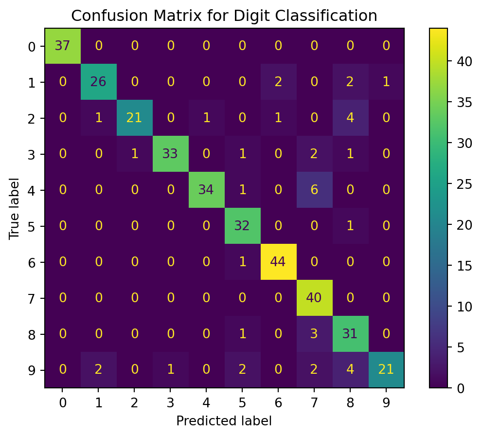
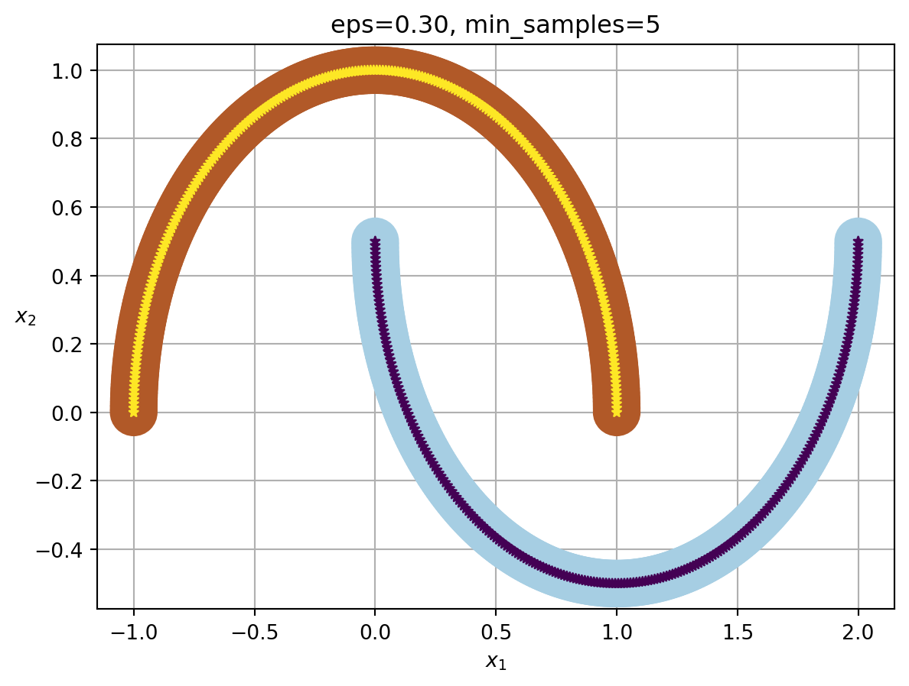
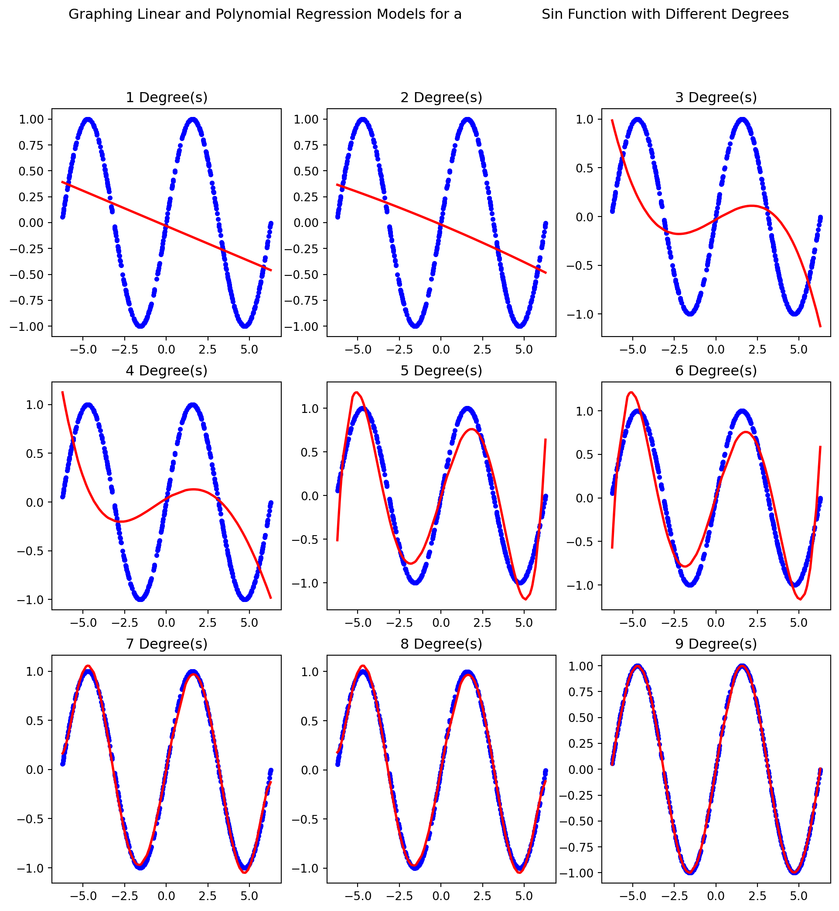
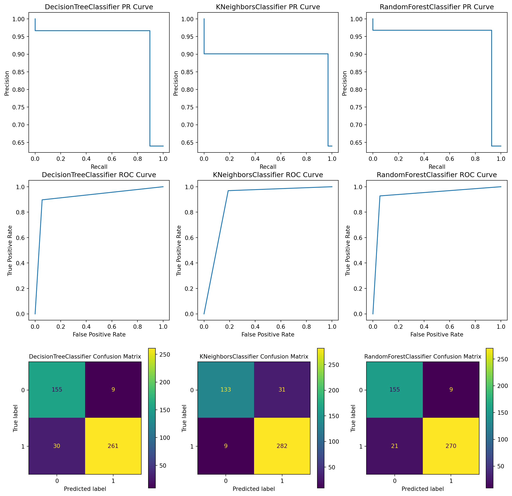
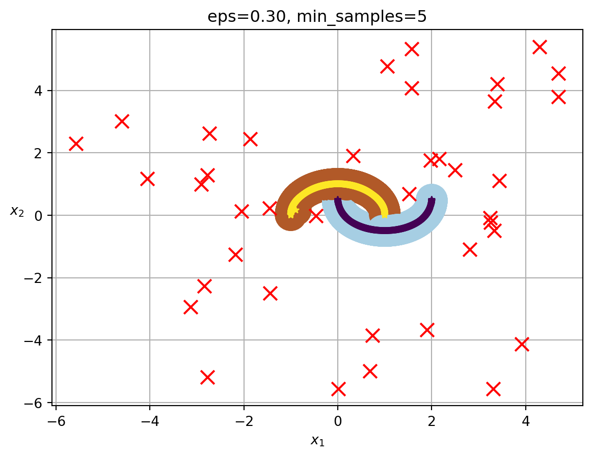

# Importsfrom sklearn.naive_bayes import GaussianNBfrom sklearn.model_selection import train_test_splitfrom sklearn.datasets import load_digitsfrom sklearn.metrics import accuracy_score, precision_score, f1_scorefrom sklearn.metrics import ConfusionMatrixDisplay, confusion_matrix# Constants for random state of the splitting data, and test size as a percentageRANDOM_STATE =20TEST_SIZE =0.2# Load the data into data, and target variables separatelyX, y = load_digits(return_X_y =True)# Split the data using train_test_splitX_train, X_test, y_train, y_test = train_test_split(X, y, test_size = TEST_SIZE, shuffle =True, random_state = RANDOM_STATE)# Instantiate a Naive Bayes Gaussian Classifierclf = GaussianNB()# Fit the clasifier to the training dataclf.fit(X_train, y_train)# Predict the test datay_pred = clf.predict(X_test)# Print the accuracyprint(f"Accuracy: {accuracy_score(y_test, y_pred)}")print(f"Precision: {precision_score(y_test, y_pred, average ='weighted')}")print(f"F1 Score: {f1_score(y_test, y_pred, average ='weighted')}")print(f"First 20 Elements of True Target Data: {y_test[:20]}")print(f"First 20 Elements of Predicted Target Data: {y_pred[:20]}")# Create the confusion matrixcm = confusion_matrix(y_test, y_pred, labels = clf.classes_)# Plot the confusion matrixdisp = ConfusionMatrixDisplay(confusion_matrix = cm, display_labels = clf.classes_)disp.plot()disp.ax_.set_title("Confusion Matrix for Digit Classification");
Accuracy: 0.8861111111111111
Precision: 0.9003197937062434
F1 Score: 0.8855893653343448
First 20 Elements of True Target Data: [0 7 9 5 8 1 3 3 7 0 9 4 7 4 0 1 1 8 1 3]
First 20 Elements of Predicted Target Data: [0 7 7 5 8 1 3 3 7 0 9 4 7 4 0 1 1 8 6 3]

Explanation
Here we use a Naive Byaes Model to classify handwritten digits. We split the data into training and testing sets, and then fit the model to the training data. We then predict the test data, and print the accuracy, precision, and F1 score. We also print the first 20 elements of the true target data, and the first 20 elements of the predicted target data. Finally, we plot the confusion matrix. We set a RANDOM_STATE of 20 for consistency and reproducibility. The TEST_SIZE was 0.2 or 20%, while training data was 80%. From the data we can see that the model is fairly accurate with accuracy of 0.886, preciision of 0.900, and F1 score of 0.886. Printing out the first 20 elements, we can see that the true target data is correct in 19/20 cases. Based on the confusion matrix we can see that 7 was misclassified as 4, a total of 6 times, and 2 was misclassified as 8 a total of 4 times, but otherwise the model is fairly accurate with all other numbers being misclassified 4 or fewer times.
Part 2: Clustering
Code
# Importsfrom sklearn.cluster import DBSCANfrom sklearn.datasets import make_moonsimport matplotlib.pyplot as pltimport numpy as np# Helper method that plots the clusters generated by DBSCAN from # handson-ml3 in 09_unsupervised_learning.ipynbdef plot_dbscan(dbscan, X, size, show_xlabels=True, show_ylabels=True): core_mask = np.zeros_like(dbscan.labels_, dtype=bool) core_mask[dbscan.core_sample_indices_] =True anomalies_mask = dbscan.labels_ ==-1 non_core_mask =~(core_mask | anomalies_mask) cores = dbscan.components_ anomalies = X[anomalies_mask] non_cores = X[non_core_mask] plt.scatter(cores[:, 0], cores[:, 1], c=dbscan.labels_[core_mask], marker='o', s=size, cmap="Paired") plt.scatter(cores[:, 0], cores[:, 1], marker='*', s=20, c=dbscan.labels_[core_mask]) plt.scatter(anomalies[:, 0], anomalies[:, 1], c="r", marker="x", s=100) plt.scatter(non_cores[:, 0], non_cores[:, 1], c=dbscan.labels_[non_core_mask], marker=".")if show_xlabels: plt.xlabel("$x_1$")else: plt.tick_params(labelbottom=False)if show_ylabels: plt.ylabel("$x_2$", rotation=0)else: plt.tick_params(labelleft=False) plt.title(f"eps={dbscan.eps:.2f}, min_samples={dbscan.min_samples}") plt.grid() plt.gca().set_axisbelow(True)# Create a dataset of two semicirclesX, y = make_moons(n_samples =500)# Initialize the DBSCAN clustering algorithmdb = DBSCAN(eps =0.3)# Fit the datadb.fit(X)# Store the labels in a more readable fieldlabels = db.labels_# Print the estimated number of clusters and noise pointsprint(f"Estimated number of clusters: {len(set(labels)) - (1if-1in labels else0)}")print(f"Estimated number of noise points: {list(labels).count(-1)}")# Plot the dataplot_dbscan(db, X, size =500)
Estimated number of clusters: 2
Estimated number of noise points: 0

Explanation
Here we use the DBSCAN clustering algorithm to cluster a dataset of two semicircles. We set the eps to 0.3, and fit the data. We then print the estimated number of clusters and noise points. We can see that the estimated number of clusters is 2, and the estimated number of noise points is 0. We can see that the clusters are very accurate, with no noise points. We set the RANDOM_STATE to 20 for consistency and reproducibility. We print out the estimated number of clusters and noise points, and then plot the data.
Part 3: Linear and Nonlinear Regression
Code
# Importsfrom sklearn.linear_model import LinearRegressionfrom sklearn.preprocessing import PolynomialFeaturesfrom sklearn.model_selection import train_test_splitimport matplotlib.pyplot as pltimport numpy as npnp.set_printoptions(precision =10)# Constants for test size, and random stateTEST_SIZE =0.2RANDOM_STATE =20# Set the random seednp.random.seed(RANDOM_STATE)# Create a dataset of 500 points between -2pi and 2pi and their sin valuesX = np.random.uniform(-2* np.pi, 2* np.pi, size = (500, 1))y = np.sin(X)# Split the data into training and testing setsX_train, X_test, y_train, y_test = train_test_split(X, y, test_size = TEST_SIZE, shuffle =True, random_state = RANDOM_STATE)# Sort the test dataindices = np.argsort(X_test, axis =0)X_test_sorted = X_test[indices].ravel()# Create a figure to plot the datafigure = plt.figure(figsize = (12, 12))figure.suptitle("Graphing Linear and Polynomial Regression Models for a \ Sin Function with Different Degrees")# Plot the linear regression model for each degree between 1 and 9for degree inrange(1, 10):# Create a linear regression model and a polynomial features model regr = LinearRegression() poly = PolynomialFeatures(degree = degree)# Fit the regression model to the training data X_poly = poly.fit_transform(X_train)# Fit the polynomial features model to the training data regr.fit(X_poly, y_train)# Transform the test data X_test_poly = poly.transform(X_test)# Predict the test data y_pred = regr.predict(X_test_poly)# Sort the predicted data regr_y_pred = y_pred[indices].ravel()# Plot the data ax = figure.add_subplot(3, 3, degree) ax.set_title(f"{degree} Degree(s)") ax.scatter(X, y, label ="Original Data", s =10, color ="blue") ax.plot(X_test_sorted, regr_y_pred, label =f"{degree} Degree Polynomial Regression Model", color ="red", linewidth =2)

Explanation
Here we use a linear regression model to predict the sin function. We create a dataset of 500 points between -2pi and 2pi and their sin values. We then split the data into training and testing sets. We then sort the test data to print a nice line graph. We then create a figure to plot the data. We then plot the linear regression model for each degree between 1 and 9. We set the RANDOM_STATE to 20 for consistency and reproducibility. We can see that the higher the degree, the more accurate the model is.
Part 4: Classification
Code
# Importsfrom sklearn.tree import DecisionTreeClassifierfrom sklearn.neighbors import KNeighborsClassifierfrom sklearn.ensemble import RandomForestClassifierfrom sklearn.datasets import load_breast_cancerfrom sklearn.model_selection import train_test_splitfrom sklearn.metrics import roc_curve, precision_recall_curve, confusion_matrixfrom sklearn.metrics import ConfusionMatrixDisplay, PrecisionRecallDisplayfrom sklearn.metrics import RocCurveDisplay# Instantiate the classifiersclassifiers = [DecisionTreeClassifier(), KNeighborsClassifier(), RandomForestClassifier()]# Load the dataX, y = load_breast_cancer(return_X_y =True)# Split the dataX_test, X_train, y_test, y_train = train_test_split(X, y, test_size = TEST_SIZE, shuffle =True, random_state = RANDOM_STATE)figure = plt.figure(figsize = (15, 15))# Iterate through the classifiersfor idx, clf inenumerate(classifiers): idx +=1# Get the name of the classifier name = clf.__class__.__name__# Fit the classifier to the training data clf.fit(X_train, y_train)# Predict the test data y_pred = clf.predict(X_test)# Calculate info about the ROC Curve, Precision Recall Curve, and Confusion Matrix precision, recall, thresholds = precision_recall_curve(y_test, y_pred) fpr, tpr, thresholds = roc_curve(y_test, y_pred) cm = confusion_matrix(y_test, y_pred, labels = clf.classes_)# Create the displays precision_recall_curve_display = PrecisionRecallDisplay(precision = precision, recall = recall) roc_curve_display = RocCurveDisplay(fpr = fpr, tpr = tpr) confusion_matrix_display = ConfusionMatrixDisplay(confusion_matrix = cm, display_labels = clf.classes_)# Plot the ROC and Precision Recall Curves ax1 = figure.add_subplot(3, 3, idx) ax1.set_title(f"{name} PR Curve") precision_recall_curve_display.plot(ax = ax1, label ="Precision Recall Curve") ax1.legend_.remove() ax2 = figure.add_subplot(3, 3, idx +len(classifiers)) ax2.set_title(f"{name} ROC Curve") roc_curve_display.plot(ax = ax2, label ="ROC Curve") ax2.legend_.remove()# Plot the confusion matrix ax3 = figure.add_subplot(3, 3, idx +2*len(classifiers)) ax3.set_title(f"{name} Confusion Matrix", fontsize =10) confusion_matrix_display.plot(ax = ax3)

Explanation
Here we use three different classifiers to classify breast cancer data. We use a Decision Tree Classifier, a K Neighbors Classifier, and a Random Forest Classifier. We split the data into training and testing sets. We then fit the classifiers to the training data, and predict the test data. We then calculate info about the ROC Curve, Precision Recall Curve, and Confusion Matrix. We then create the displays for the ROC and Precision Recall Curves, and the Confusion Matrix. We set the RANDOM_STATE to 20 for consistency and reproducibility. We can see that the Random Forest Classifier is the most accurate, with the highest precision and recall, and the highest area under the ROC curve. The K Neighbors Classifier is the least accurate, with the most false positives and false negatives in the confusion matrix. The Decision Tree Classifier had the most false misclassification of the 1 class, with 30 false negatives.
Part 5: Anomaly/Outlier Detection
Code
# Importsfrom sklearn.cluster import DBSCANfrom sklearn.datasets import make_moonsimport matplotlib.pyplot as pltimport numpy as npRANDOM_STATE =20# Helper method that plots the clusters generated by DBSCAN from # handson-ml3 in 09_unsupervised_learning.ipynbdef plot_dbscan(dbscan, X, size, show_xlabels=True, show_ylabels=True): core_mask = np.zeros_like(dbscan.labels_, dtype=bool) core_mask[dbscan.core_sample_indices_] =True anomalies_mask = dbscan.labels_ ==-1 non_core_mask =~(core_mask | anomalies_mask) cores = dbscan.components_ anomalies = X[anomalies_mask] non_cores = X[non_core_mask] plt.scatter(cores[:, 0], cores[:, 1], c=dbscan.labels_[core_mask], marker='o', s=size, cmap="Paired") plt.scatter(cores[:, 0], cores[:, 1], marker='*', s=20, c=dbscan.labels_[core_mask]) plt.scatter(anomalies[:, 0], anomalies[:, 1], c="r", marker="x", s=100) plt.scatter(non_cores[:, 0], non_cores[:, 1], c=dbscan.labels_[non_core_mask], marker=".")if show_xlabels: plt.xlabel("$x_1$")else: plt.tick_params(labelbottom=False)if show_ylabels: plt.ylabel("$x_2$", rotation=0)else: plt.tick_params(labelleft=False) plt.title(f"eps={dbscan.eps:.2f}, min_samples={dbscan.min_samples}") plt.grid() plt.gca().set_axisbelow(True)# Create a dataset of two semicirclesX, y = make_moons(n_samples =1000, random_state = RANDOM_STATE)# Create 10 outlier pointsnp.random.seed(RANDOM_STATE)X_outliers = np.random.uniform(low =-6, high =6, size = (40, 2))X = np.concatenate([X, X_outliers], axis =0)# Initialize the DBSCAN clustering algorithmdb = DBSCAN(eps =0.3)# Fit the datadb.fit(X)# Store the labels in a more readable fieldlabels = db.labels_# Print the estimated number of clusters and noise pointsprint(f"Estimated number of clusters: {len(set(labels)) - (1if-1in labels else0)}")print(f"Estimated number of noise points: {list(labels).count(-1)}")# Plot the dataplot_dbscan(db, X, size =500)
Estimated number of clusters: 2
Estimated number of noise points: 39

Explanation
Here we use the DBSCAN clustering algorithm to cluster a dataset of two semicircles. We set the eps to 0.3, and fit the data. We add several outlier points to the data to see if the DBSCAN algorithm can detect them. We then print the estimated number of clusters and noise points. We can see that the estimated number of clusters is 2, and the estimated number of noise points is 39. We added 40 points, which means that one of the randomly placed points on the graph was not detected as an outlier, and was close enough to one of the half moon clusters. We set the RANDOM_STATE to 20 for consistency and reproducibility. We print out the estimated number of clusters and noise points, and then plot the data.
Source Code
---title: "CS 5805 Final Project"date: "2023-11-27"author: - name: Vincent DiPernaformat: html: code-fold: false toc: truejupyter: python3---## Part 1: Probability Theory and Random Variables### Code```{python}# Importsfrom sklearn.naive_bayes import GaussianNBfrom sklearn.model_selection import train_test_splitfrom sklearn.datasets import load_digitsfrom sklearn.metrics import accuracy_score, precision_score, f1_scorefrom sklearn.metrics import ConfusionMatrixDisplay, confusion_matrix# Constants for random state of the splitting data, and test size as a percentageRANDOM_STATE =20TEST_SIZE =0.2# Load the data into data, and target variables separatelyX, y = load_digits(return_X_y =True)# Split the data using train_test_splitX_train, X_test, y_train, y_test = train_test_split(X, y, test_size = TEST_SIZE, shuffle =True, random_state = RANDOM_STATE)# Instantiate a Naive Bayes Gaussian Classifierclf = GaussianNB()# Fit the clasifier to the training dataclf.fit(X_train, y_train)# Predict the test datay_pred = clf.predict(X_test)# Print the accuracyprint(f"Accuracy: {accuracy_score(y_test, y_pred)}")print(f"Precision: {precision_score(y_test, y_pred, average ='weighted')}")print(f"F1 Score: {f1_score(y_test, y_pred, average ='weighted')}")print(f"First 20 Elements of True Target Data: {y_test[:20]}")print(f"First 20 Elements of Predicted Target Data: {y_pred[:20]}")# Create the confusion matrixcm = confusion_matrix(y_test, y_pred, labels = clf.classes_)# Plot the confusion matrixdisp = ConfusionMatrixDisplay(confusion_matrix = cm, display_labels = clf.classes_)disp.plot()disp.ax_.set_title("Confusion Matrix for Digit Classification");```### ExplanationHere we use a Naive Byaes Model to classify handwritten digits. We split the data into training and testing sets, and then fit the model to the training data. We then predict the test data, and print the accuracy, precision, and F1 score. We also print the first 20 elements of the true target data, and the first 20 elements of the predicted target data. Finally, we plot the confusion matrix. We set a RANDOM_STATE of 20 for consistency and reproducibility. The TEST_SIZEwas 0.2 or 20%, while training data was 80%. From the data we can see that the model is fairly accurate with accuracy of 0.886, preciision of 0.900, and F1 score of 0.886. Printing out the first 20 elements, we can see that the true target data is correct in 19/20 cases. Based on the confusion matrix we can see that 7 was misclassified as 4, a total of 6 times, and 2 was misclassified as 8 a total of 4 times, but otherwise the model is fairly accurate with all other numbers being misclassified 4 or fewer times.```{python}## Part 2: Clustering### Code```{python}# Importsfrom sklearn.cluster import DBSCANfrom sklearn.datasets import make_moonsimport matplotlib.pyplot as pltimport numpy as np# Helper method that plots the clusters generated by DBSCAN from # handson-ml3 in 09_unsupervised_learning.ipynbdef plot_dbscan(dbscan, X, size, show_xlabels=True, show_ylabels=True): core_mask = np.zeros_like(dbscan.labels_, dtype=bool) core_mask[dbscan.core_sample_indices_] =True anomalies_mask = dbscan.labels_ ==-1 non_core_mask =~(core_mask | anomalies_mask) cores = dbscan.components_ anomalies = X[anomalies_mask] non_cores = X[non_core_mask] plt.scatter(cores[:, 0], cores[:, 1], c=dbscan.labels_[core_mask], marker='o', s=size, cmap="Paired") plt.scatter(cores[:, 0], cores[:, 1], marker='*', s=20, c=dbscan.labels_[core_mask]) plt.scatter(anomalies[:, 0], anomalies[:, 1], c="r", marker="x", s=100) plt.scatter(non_cores[:, 0], non_cores[:, 1], c=dbscan.labels_[non_core_mask], marker=".")if show_xlabels: plt.xlabel("$x_1$")else: plt.tick_params(labelbottom=False)if show_ylabels: plt.ylabel("$x_2$", rotation=0)else: plt.tick_params(labelleft=False) plt.title(f"eps={dbscan.eps:.2f}, min_samples={dbscan.min_samples}") plt.grid() plt.gca().set_axisbelow(True)# Create a dataset of two semicirclesX, y = make_moons(n_samples =500)# Initialize the DBSCAN clustering algorithmdb = DBSCAN(eps =0.3)# Fit the datadb.fit(X)# Store the labels in a more readable fieldlabels = db.labels_# Print the estimated number of clusters and noise pointsprint(f"Estimated number of clusters: {len(set(labels)) - (1if-1in labels else0)}")print(f"Estimated number of noise points: {list(labels).count(-1)}")# Plot the dataplot_dbscan(db, X, size =500)```### ExplanationHere we use the DBSCAN clustering algorithm to cluster a dataset of two semicircles. We set the eps to 0.3, and fit the data.We then print the estimated number of clusters and noise points. We can see that the estimated number of clusters is 2, and theestimated number of noise points is 0. We can see that the clusters are very accurate, with no noise points. We set the RANDOM_STATEto 20 for consistency and reproducibility. We print out the estimated number of clusters and noise points, and then plot the data.```{python}## Part 3: Linear and Nonlinear Regression### Code```{python}# Importsfrom sklearn.linear_model import LinearRegressionfrom sklearn.preprocessing import PolynomialFeaturesfrom sklearn.model_selection import train_test_splitimport matplotlib.pyplot as pltimport numpy as npnp.set_printoptions(precision =10)# Constants for test size, and random stateTEST_SIZE =0.2RANDOM_STATE =20# Set the random seednp.random.seed(RANDOM_STATE)# Create a dataset of 500 points between -2pi and 2pi and their sin valuesX = np.random.uniform(-2* np.pi, 2* np.pi, size = (500, 1))y = np.sin(X)# Split the data into training and testing setsX_train, X_test, y_train, y_test = train_test_split(X, y, test_size = TEST_SIZE, shuffle =True, random_state = RANDOM_STATE)# Sort the test dataindices = np.argsort(X_test, axis =0)X_test_sorted = X_test[indices].ravel()# Create a figure to plot the datafigure = plt.figure(figsize = (12, 12))figure.suptitle("Graphing Linear and Polynomial Regression Models for a \ Sin Function with Different Degrees")# Plot the linear regression model for each degree between 1 and 9for degree inrange(1, 10):# Create a linear regression model and a polynomial features model regr = LinearRegression() poly = PolynomialFeatures(degree = degree)# Fit the regression model to the training data X_poly = poly.fit_transform(X_train)# Fit the polynomial features model to the training data regr.fit(X_poly, y_train)# Transform the test data X_test_poly = poly.transform(X_test)# Predict the test data y_pred = regr.predict(X_test_poly)# Sort the predicted data regr_y_pred = y_pred[indices].ravel()# Plot the data ax = figure.add_subplot(3, 3, degree) ax.set_title(f"{degree} Degree(s)") ax.scatter(X, y, label ="Original Data", s =10, color ="blue") ax.plot(X_test_sorted, regr_y_pred, label =f"{degree} Degree Polynomial Regression Model", color ="red", linewidth =2)```### ExplanationHere we use a linear regression model to predict the sin function. We create a dataset of 500 points between -2pi and 2pi and their sin values. We then split the data into training and testing sets. We then sort the test data to print a nice line graph. We then create a figure to plot the data. We then plot the linear regression model for each degree between 1 and 9. We set theRANDOM_STATE to 20 for consistency and reproducibility. We can see that the higher the degree, the more accurate the model is.## Part 4: Classification### Code```{python}# Importsfrom sklearn.tree import DecisionTreeClassifierfrom sklearn.neighbors import KNeighborsClassifierfrom sklearn.ensemble import RandomForestClassifierfrom sklearn.datasets import load_breast_cancerfrom sklearn.model_selection import train_test_splitfrom sklearn.metrics import roc_curve, precision_recall_curve, confusion_matrixfrom sklearn.metrics import ConfusionMatrixDisplay, PrecisionRecallDisplayfrom sklearn.metrics import RocCurveDisplay# Instantiate the classifiersclassifiers = [DecisionTreeClassifier(), KNeighborsClassifier(), RandomForestClassifier()]# Load the dataX, y = load_breast_cancer(return_X_y =True)# Split the dataX_test, X_train, y_test, y_train = train_test_split(X, y, test_size = TEST_SIZE, shuffle =True, random_state = RANDOM_STATE)figure = plt.figure(figsize = (15, 15))# Iterate through the classifiersfor idx, clf inenumerate(classifiers): idx +=1# Get the name of the classifier name = clf.__class__.__name__# Fit the classifier to the training data clf.fit(X_train, y_train)# Predict the test data y_pred = clf.predict(X_test)# Calculate info about the ROC Curve, Precision Recall Curve, and Confusion Matrix precision, recall, thresholds = precision_recall_curve(y_test, y_pred) fpr, tpr, thresholds = roc_curve(y_test, y_pred) cm = confusion_matrix(y_test, y_pred, labels = clf.classes_)# Create the displays precision_recall_curve_display = PrecisionRecallDisplay(precision = precision, recall = recall) roc_curve_display = RocCurveDisplay(fpr = fpr, tpr = tpr) confusion_matrix_display = ConfusionMatrixDisplay(confusion_matrix = cm, display_labels = clf.classes_)# Plot the ROC and Precision Recall Curves ax1 = figure.add_subplot(3, 3, idx) ax1.set_title(f"{name} PR Curve") precision_recall_curve_display.plot(ax = ax1, label ="Precision Recall Curve") ax1.legend_.remove() ax2 = figure.add_subplot(3, 3, idx +len(classifiers)) ax2.set_title(f"{name} ROC Curve") roc_curve_display.plot(ax = ax2, label ="ROC Curve") ax2.legend_.remove()# Plot the confusion matrix ax3 = figure.add_subplot(3, 3, idx +2*len(classifiers)) ax3.set_title(f"{name} Confusion Matrix", fontsize =10) confusion_matrix_display.plot(ax = ax3)```### ExplanationHere we use three different classifiers to classify breast cancer data. We use a Decision Tree Classifier, a K Neighbors Classifier,and a Random Forest Classifier. We split the data into training and testing sets. We then fit the classifiers to the training data,and predict the test data. We then calculate info about the ROC Curve, Precision Recall Curve, and Confusion Matrix. We then createthe displays for the ROC and Precision Recall Curves, and the Confusion Matrix. We set the RANDOM_STATE to 20 for consistency andreproducibility. We can see that the Random Forest Classifier is the most accurate, with the highest precision and recall, and thehighest area under the ROC curve. The K Neighbors Classifier is the least accurate, with the most false positives and false negativesin the confusion matrix. The Decision Tree Classifier had the most false misclassification of the 1 class, with 30 false negatives.## Part 5: Anomaly/Outlier Detection### Code```{python}# Importsfrom sklearn.cluster import DBSCANfrom sklearn.datasets import make_moonsimport matplotlib.pyplot as pltimport numpy as npRANDOM_STATE =20# Helper method that plots the clusters generated by DBSCAN from # handson-ml3 in 09_unsupervised_learning.ipynbdef plot_dbscan(dbscan, X, size, show_xlabels=True, show_ylabels=True): core_mask = np.zeros_like(dbscan.labels_, dtype=bool) core_mask[dbscan.core_sample_indices_] =True anomalies_mask = dbscan.labels_ ==-1 non_core_mask =~(core_mask | anomalies_mask) cores = dbscan.components_ anomalies = X[anomalies_mask] non_cores = X[non_core_mask] plt.scatter(cores[:, 0], cores[:, 1], c=dbscan.labels_[core_mask], marker='o', s=size, cmap="Paired") plt.scatter(cores[:, 0], cores[:, 1], marker='*', s=20, c=dbscan.labels_[core_mask]) plt.scatter(anomalies[:, 0], anomalies[:, 1], c="r", marker="x", s=100) plt.scatter(non_cores[:, 0], non_cores[:, 1], c=dbscan.labels_[non_core_mask], marker=".")if show_xlabels: plt.xlabel("$x_1$")else: plt.tick_params(labelbottom=False)if show_ylabels: plt.ylabel("$x_2$", rotation=0)else: plt.tick_params(labelleft=False) plt.title(f"eps={dbscan.eps:.2f}, min_samples={dbscan.min_samples}") plt.grid() plt.gca().set_axisbelow(True)# Create a dataset of two semicirclesX, y = make_moons(n_samples =1000, random_state = RANDOM_STATE)# Create 10 outlier pointsnp.random.seed(RANDOM_STATE)X_outliers = np.random.uniform(low =-6, high =6, size = (40, 2))X = np.concatenate([X, X_outliers], axis =0)# Initialize the DBSCAN clustering algorithmdb = DBSCAN(eps =0.3)# Fit the datadb.fit(X)# Store the labels in a more readable fieldlabels = db.labels_# Print the estimated number of clusters and noise pointsprint(f"Estimated number of clusters: {len(set(labels)) - (1if-1in labels else0)}")print(f"Estimated number of noise points: {list(labels).count(-1)}")# Plot the dataplot_dbscan(db, X, size =500)```### ExplanationHere we use the DBSCAN clustering algorithm to cluster a dataset of two semicircles. We set the eps to 0.3, and fit the data.We add several outlier points to the data to see if the DBSCAN algorithm can detect them. We then print the estimated number ofclusters and noise points. We can see that the estimated number of clusters is 2, and the estimated number of noise points is 39.We added 40 points, which means that one of the randomly placed points on the graph was not detected as an outlier, and was closeenough to one of the half moon clusters. We set the RANDOM_STATE to 20 for consistency and reproducibility. We print out theestimated number of clusters and noise points, and then plot the data.